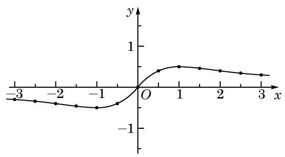
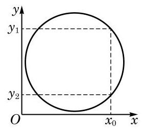
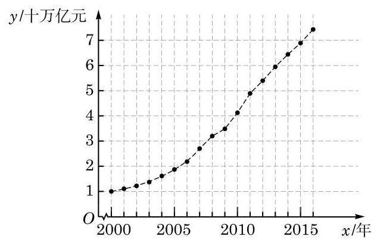
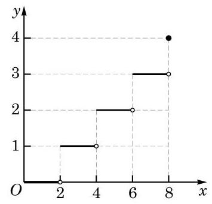
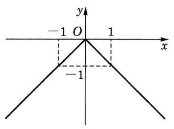
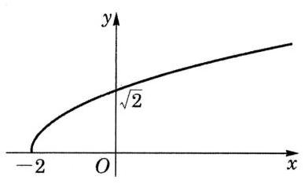
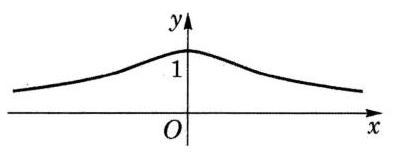
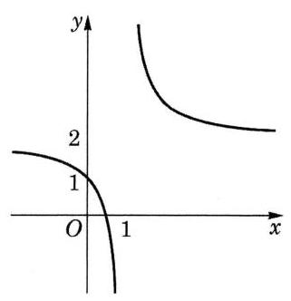

函数的概念、性质及应用
函数是刻画世间万物之间联系的有力工具，借助于函数，可以更好地掌握事物的发展规律，从而深化人们的认识。函数概念的引入，使数学本身也经历了从常量到变量、从有限到无限的发展，从而逐步由初等数学走向高等数学。学好函数，对进一步学习以后的一些数学知识，如三角、微积分等，都是非常必要的。
1 函数
我们已经学习了正比例函数、反比例函数、一次函数、二次函数、幂函数、指数函数及对数函数等。
例如，对于正比例函数 ，变量 的取值范围是 ，其对应关系是将一个实数对应到它的 2 倍。当变量 时，对应得到唯一的值 ；当变量 时，对应得到唯一的值 ；当变量 取遍一切实数时，对应得到所有的实数 。
又如，对于对数函数 ，变量 的取值范围是 。其对应关系是将 中的实数对应到它的以 3 为底的对数。当变量 时，对应得到唯一的值 ；当变量 时，对应得到唯一的值 ；当变量 取遍一切正数时，对应得到所有的实数 。
在这些例子中，都出现了两个处于变化之中的量，其中一个量之值随另一个量之值的确定而按一定的对应关系唯一确定，从而随着另一个量在一定范围内的变化而相应地发生变化。在用数学工具解决实际问题的过程中，我们还会遇到其他一些类似的情况。由此可抽象出函数的概念。
定义 设 是一个非空的实数集，如果按照某种确定的对应关系 ，使对集合 中的任意给定的 ，都有唯一的实数 与之对应，就称这个对应关系 为集合 上的一个函数（function），记作
对应关系常用小写字母，如 、、 等表示。
在之前学习具体的函数，如幂函数、指数函数及对数函数的时候，我们往往只写出反映函数对应关系的表达式，如 等，而不明显地写出其定义域。此时，函数 的定义域由使得其表达式 有意义的全体实数组成。
例题 1
例 1 求下列函数的定义域：
(1) ；
(2) ；
(3) 。
答案与解析收起 / 展开
解 (1) 定义域 。
(2) 定义域 。
(3) 解不等式组
得
故定义域 。
在实际问题中，有关函数的定义域应该受到问题实际意义的制约。例如，某物体作自由落体运动时，其位移 关于时间 的函数可表示为 ，其中的自变量 就受到 的限制（ 是重力加速度，而 表示下落的总时间）。
除定义域外，函数的另一要素是对应关系。
如果两个函数的定义域和对应关系都完全一致，就称这两个函数是相同的。
这样， 与 是两个不同的函数。
此外，同一个对应关系可能有不同的表述形式。例如， 与 实际上是相同的。
例题 2
例 2 判断下列函数与函数 是否相同，并说明理由：
(1) ；(2) ；
(3) ；(4) 。
答案与解析收起 / 展开
解 (1) 负数不属于 的定义域，因此该函数的定义域与 的定义域不同，它与 不是相同的函数。
你能再举出几组对应关系一致、但表述形式不同的两个相同的函数吗？
(2) 的定义域为 ，并且其对应关系是将任一给定的实数 对应到 ，与 的对应关系一致，因此该函数与 是相同的函数。
(3) 0 不在 的定义域中，因此该函数的定义域与 的定义域不同，从而与 不是相同的函数。
(4) 的对应关系将 -1 对应到了 1，而不是 -1，它与 的对应关系不同，因此该函数与 不是相同的函数。
在例 2 中，只有 的对应关系和定义域与 的相同，它们是相同的函数。
根据已经学过的一些简单函数的值域，可以求得稍复杂函数的值域。
例题 3
答案与解析收起 / 展开
解 该函数的定义域为 。
根据指数函数的性质，当 取遍所有实数时， 的取值范围为 ，因而 的取值范围为 。
又根据不等式的性质，令 ，当 取遍 中所有数时， 的取值范围为 。
因此，函数 的值域为 。
练习 5.1(1)
练习5.1(1) · 1
答案与解析收起 / 展开
练习5.1(1) · 2
- 下列四组函数中，同组的两个函数是相同函数的是（）
A. 与 ；B. 与 ；
C. 与 ；D. 与 。
答案与解析收起 / 展开
练习5.1(1) · 3
答案与解析收起 / 展开
2 函数的表示方法
例如， 等都是用解析法表示的函数。作自由落体运动的物体的位移 与时间 满足 （ 是重力加速度），也是用解析法来表示的函数。
例如，表 5-1 列出了国家统计局网站上发布的 2000 年至 2016 年的国内生产总值（GDP）。
表 5-1 2000 年至 2016 年中国 GDP 变化表
| 年份 |
GDP/亿元 |
年份 |
GDP/亿元 |
| 2000 |
100280 |
2009 |
348518 |
| 2001 |
110863 |
2010 |
412119 |
| 2002 |
121717 |
2011 |
487940 |
| 2003 |
137422 |
2012 |
538580 |
| 2004 |
161840 |
2013 |
592963 |
| 2005 |
187319 |
2014 |
641281 |
| 2006 |
219439 |
2015 |
685993 |
| 2007 |
270092 |
2016 |
740061 |
| 2008 |
319245 |
|
|
注：未包括中国香港、澳门特别行政区和台湾省的地区生产总值数据。
从上表中可以看出，当自变量年份（2000 至 2016 中的整数）确定时，可按照表中所给出的对应关系，查到该年度我国的 GDP 值作为函数值。该函数的定义域为 ，是一个有限集。
可以看出，如果对定义域 中的实数 ，有 ，那么点 一定在该函数的图像上；反之，如果点 在该函数的图像上，那么必有 ，且 。
常见的一次函数、二次函数、幂函数、指数函数及对数函数的图像，已经在初中和上一章中学过了。
例题 4
答案与解析收起 / 展开
解 取自变量 的值分别为 -3、、-2、、-1、、、、、、、、，计算出相应的函数值。在平面直角坐标系中标出相应的点，并用光滑的曲线连接这些点，得大致图像如图 5-1-1 所示。

图 5-1-1
利用函数的图像来表示函数的方法称为图像法。
例题 5
例 5 以下图形中，哪些是函数的图像，哪些不是？

图 5-1-2
该函数的图像会出现在第二或第四象限吗？为什么？
需要注意的是，绘制在纸上的或计算机屏幕上的函数图像，终究只是大致的图像，它们无法精确地表示一个函数。但大致的图像能够帮助我们直观地了解函数的性质，从而能更好地发现和研究有关函数的性质。"数形结合"的方法是研究函数的重要方法之一。
答案与解析收起 / 展开
解 (1) 这是函数的图像。该函数的定义域是由有限个数构成的集合，定义域中每个自变量的值对应的函数值唯一确定。
(2) 这是函数的图像。该函数的定义域是区间 ，定义域中的每个自变量的值所对应的函数值唯一确定。
(3) 这不是函数的图像。如图 5-1-3， 对应了 和 。

图 5-1-3
(4) 这是函数的图像。该函数的定义域是区间 ，定义域中的每个自变量的值所对应的函数值唯一确定。
前文中 2000 年至 2016 年中国国内生产总值（GDP）关于年份的函数，也可以用图像法表示，如图 5-1-4 所示。

图 5-1-4
函数图像上所有点的横坐标的集合就是该函数的定义域，而纵坐标的集合就是该函数的值域。
在用解析法表示函数时，有一些函数在不同的区间上可以有不同的表达式。例如，函数 就是通过
来定义的。这样表示函数的方法叫做分段表示法。
例题 6
例 6 某车辆装配车间每 2 h 装配完成一辆车。按照计划，该车间今天生产 8 h。用解析法和图像法分别表示从当天开始生产的时刻起所经过的时间 （单位：h）与装配完成的车辆数 （单位：辆）之间的函数 。
答案与解析收起 / 展开
解 由题意，当 时，；当 时，；当 时，；当 时，；当 时，。
在检验平面直角坐标系中的一个图形是否为函数的图像时，需要注意该图形反映的对应关系是否符合函数的定义，即定义域中的每一个 的值是否对应到唯一的一个 的值。
分段表示法也是一种解析法。用分段表示法表示一个函数时，其定义域就是每一部分中自变量的取值范围的并集。
可以用如下的分段表示法表示 与 之间的函数关系：
该函数的大致图像如图 5-1-5 所示。

图 5-1-5
不大于 的最大整数，称为实数 的整数部分。
数学上，常用 表示不大于 的最大整数。注意到当 时，，从而 。使用此符号，例 6 中的函数可以简洁地表示为 。
练习 5.1(2)
练习5.1(2) · 1
- 作下列函数的大致图像：
(1) ；(2) ；
(3) ；(4) 。
答案与解析收起 / 展开
- (1)

(2)

(3)

(4)

练习5.1(2) · 2
- 根据下图的函数图像，用解析法表示 关于 的函数。

(第 2 题)
答案与解析收起 / 展开
习题 5.1
A 组
习题5.1A · 1
- 求下列函数的定义域：
(1) ；(2) ；
(3) ；
(4) 。
答案与解析收起 / 展开
习题5.1A · 2
答案与解析收起 / 展开
习题5.1A · 3
- 观察下列函数的图像，并写出它们的值域：

(第 3 题)
答案与解析收起 / 展开
B 组
习题5.1B · 1
- 设 是常数，求下列函数的定义域：
(1) ；(2) 。
答案与解析收起 / 展开
1.(1)当 时, ；当 时, , ; 当 时, .
(2)当 时, ; 当 时, ；当 时,
习题5.1B · 2
答案与解析收起 / 展开
课后阅读
函数概念的形成和发展
17 世纪是工业生产和科学技术飞速发展的时代，在对天文和航海技术的探索中，科学家们往往需要研究一些运动中的对象，如天体位置、航海中经纬度等。这些问题的实质都是分析研究两个变化中的量之间的关系，并据此描述物体的变化规律。这是函数概念产生和发展的背景。
在 17 世纪早期，意大利科学家伽利略（G. Galilei）、法国数学家笛卡儿（R. Descartes）等在他们的著作中已经注意到了一个变量对另一个变量的依赖关系，但并没有提炼出函数的概念。17 世纪后期，英国数学家牛顿（I. Newton）和德国数学家莱布尼茨（G. W. Leibniz）在分别创立微积分时，考虑的主要对象还是曲线，而牛顿则一直用"流量"一词来表示变量之间的关系。
"函数"（function）一词作为数学概念首先由莱布尼茨引入，用于描述随曲线变化而变化的几何量，如坐标、切线等。此后，瑞士数学家约翰·伯努利（John Bernoulli）首次给出了明确的函数定义，他将函数描述为"由变量和常量以某种方式组成的量"。将函数作为中心概念进行数学研究并作为微积分基础的是瑞士数学家欧拉（L. Euler）。欧拉称变量的函数是一个解析表达式，引入了函数符号 并沿用至今。欧拉还将函数分成代数函数（由四则运算和开根等运算组成的函数）和超越函数（含指数、对数、三角运算等的函数），他也是第一个将正弦、余弦等当作函数处理的数学家。欧拉的很多数学发现基于他的函数观点。在 1755 年，欧拉将函数的定义修改为：如果某些变量以某种方式依赖于另一些变量，即当后面的变量变化时，前面的变量也随之变化，那么称前面的变量是后面变量的函数。
在欧拉时代，人们还是习惯于用表达式来表示函数。随着对微积分研究的深入，18 世纪末 19 世纪初，人们对函数的认识有了进一步提高。德国数学家狄利克雷（P. G. L. Dirichlet）于 1837 年提出了如下的函数的定义：若对于 的每一个值， 总有一个唯一确定的值与之对应，则称 是 的函数。这个定义较清楚地说明了函数概念的本质是对应关系，这个对应关系可以用公式、图像、表格或其他形式表示。这个概念非常清晰，很快被数学家所接受。到 19 世纪 70 年代以后，随着集合论的出现，就有了使用规范的集合语言表述的函数定义，函数概念也就更加精确了。
中文"函数"一词是由我国清代数学家李善兰在 1859 年和英国人伟烈亚力（A. Wylie）合译《代微积拾级》时从英文"function"翻译而来，这一名词一直使用至今。
从上面介绍可以看出，历史上函数概念的建立是从模糊到清晰、从朴素到深入逐步完善的，这符合人们认识事物的一般规律。了解函数概念的发展历史，对于我们更好地理解函数这一重要的数学概念会有很大的帮助。